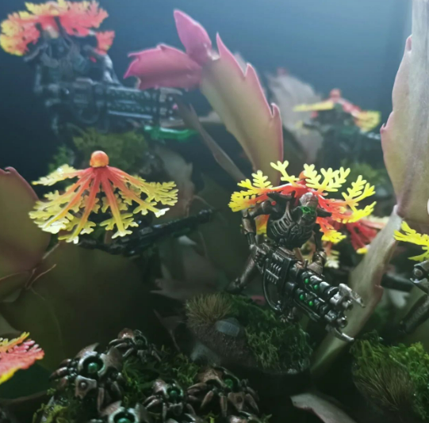
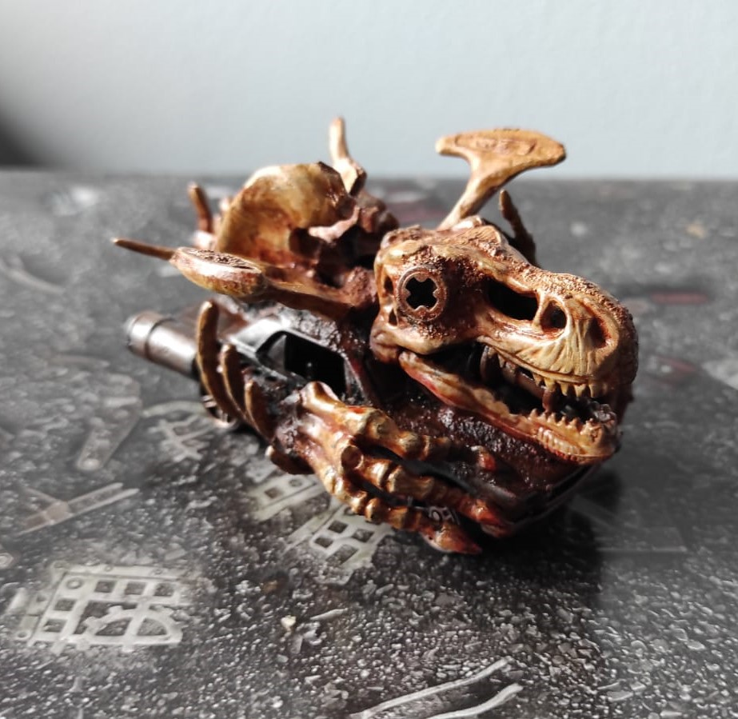
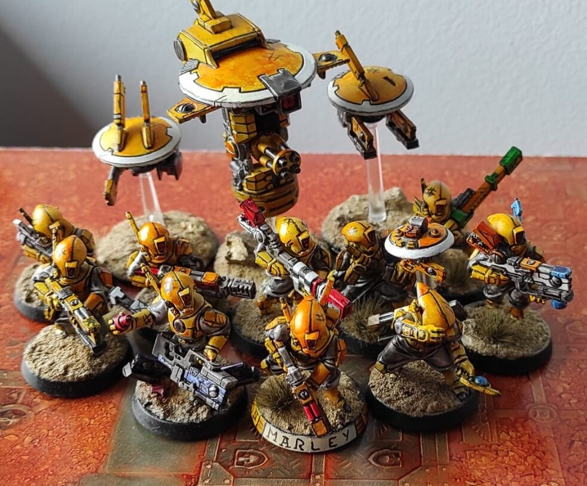

(if the page breaks, click HERE)
⏪ go back
💅Other paint styles to try!💅
how to have fun painting stuff
You have painted your first miniature, or maybe your first team of minis… Now what???
I spent my first year painting all models the same way: basecoat → wash → nothing else,
because i was too scared to try other stuff. That was the WORST year in my mini painting career:
- I didn’t improve: i only used techniques with low skill ceilings and mastered nothing
- I didn’t have fun: it was a mechanical process, with 0 creativity involved
- I didn’t learn anything: i thought there was only one “correct” way of painting minis, and used it for 40+ models
I don’t want you to repeat my mistakes, so try those techniques on your next projects!
- Protip: Don't waste your money on huge army games, invest in small teams and use a different style for every squad. That way,
you'll learn tons of different techniques, and you'll have enough models to actually master them!
The slap-trad-chop-itional idk how it’s called i’m sorry method
The traditional method 🤶 is too boooring and long, Slapchop 🧤 is too mainstream and limited. Why not a mix of the two?

I added little flowers to my necrons because they felt cute :3
- Prime Black
- Use "normal" colors: pick the primary one and use a big, flat brush, removing the excess on a paper towel. You should use more paint than with a drybrush,
but not enough to leave weird blobs and textures
- You could try making gradients with less and less paint. For the rest of the mini, The traditional method 🤶
Blanchitsu
Desaturated, muddy and grimdark. Blanche, please sign my forehead, i'm a huge fan!

Look, i'm still saving up for a Turnip28 squad...
- Prime Black
- Basecoat with only White and Metallics
- Use desaturated oil paints: brown, Black, dark red or green...
- Remove most of it using make-up sponges and q-tips, you could add some white spirit to remove more paint (be careful)
- Paint details, use pigments (or a drybrush) to give it a dusty look
Shoutout to Marco Frisoni's tutorial for teaching me this stuff
Comic book
Marvel, DC, borderlands 2???

This is no place for no hero, this is no place for no better man...
- Prime white
- Basecoat with saturated contrast paints
- With Black paint and a small brush, or better with a small, Black marker, edge highlight and panel line
- Add hashtags, scratches and textures to all empty panels to give them a 2D look
Hope you'll have fun! If you know other wacky paint techs please LMK!!!
⏪ go back